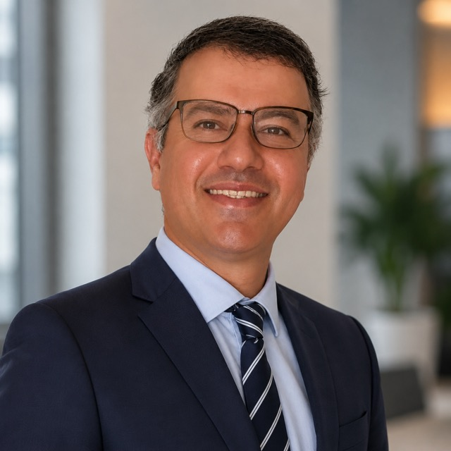
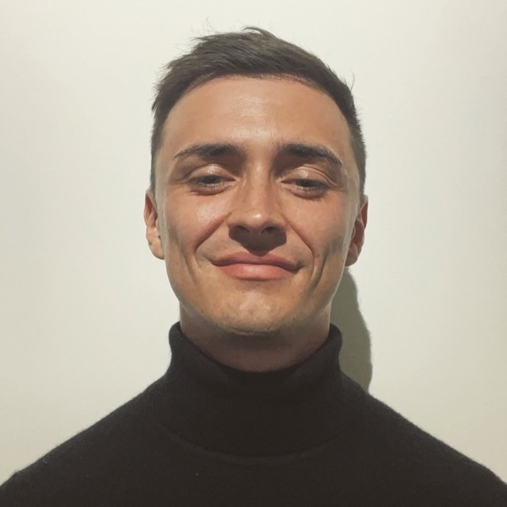

Co-founder
Majid Zamani, PhD
Lecturer, University of Southampton
Low-power processors and implantable computing for brain-machine interfacing. Previously UCL.
Profile →The problem sits between two fields that rarely share a room: what the cortex actually emits, and what silicon can afford to compute inside a body. Thalamic is small on purpose, and staffed on both sides of that line.

Low-power processors and implantable computing for brain-machine interfacing. Previously UCL.
Profile →
Energy-efficient spiking decoders for intracortical BCI.
[ One line on what they work on. ]
[ One line on what they work on. ]
[ One line on what they work on. ]
Thalamic is pre-seed and in stealth. We are a founding team with backgrounds in low-power digital design, mixed-signal silicon and neural signal processing, working with a small group of research partners on the first gen of the T-1.
We are hiring around the founders rather than above them — the roles below are the next people we expect to add. If you are evaluating us as a partner, an investor or a candidate, get in touch.
The event-driven datapath itself — what runs as fixed function, what stays programmable, and where the tile boundary falls.
The front end where the array meets the chip: acquisition, conversion and filtering inside the thermal budget.
Detection, feature extraction and decoding — deciding which parts of the signal carry information and which are bandwidth.
Telemetry, the host-side interface, and the evaluation platform research partners will build against.
Early roles shape the architecture rather than implement it. If the problem on the technology page is one you have thought about before, we would rather hear from you early than late.
Open roles →